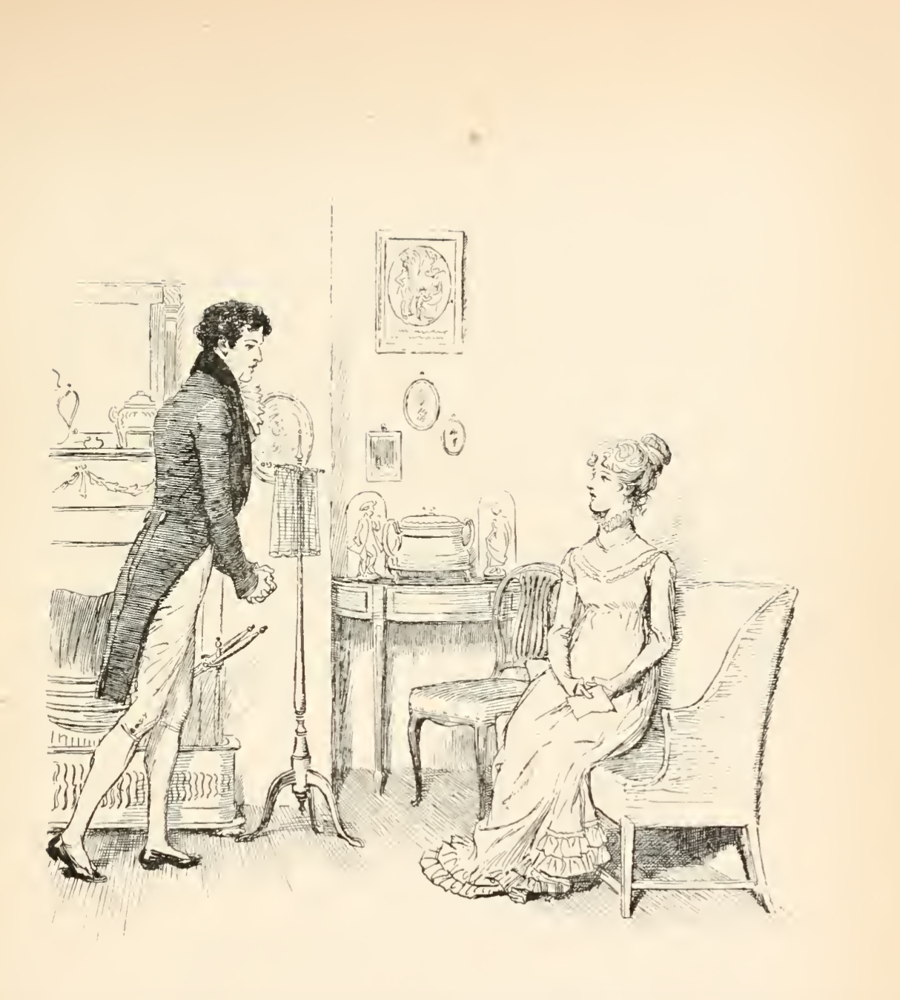
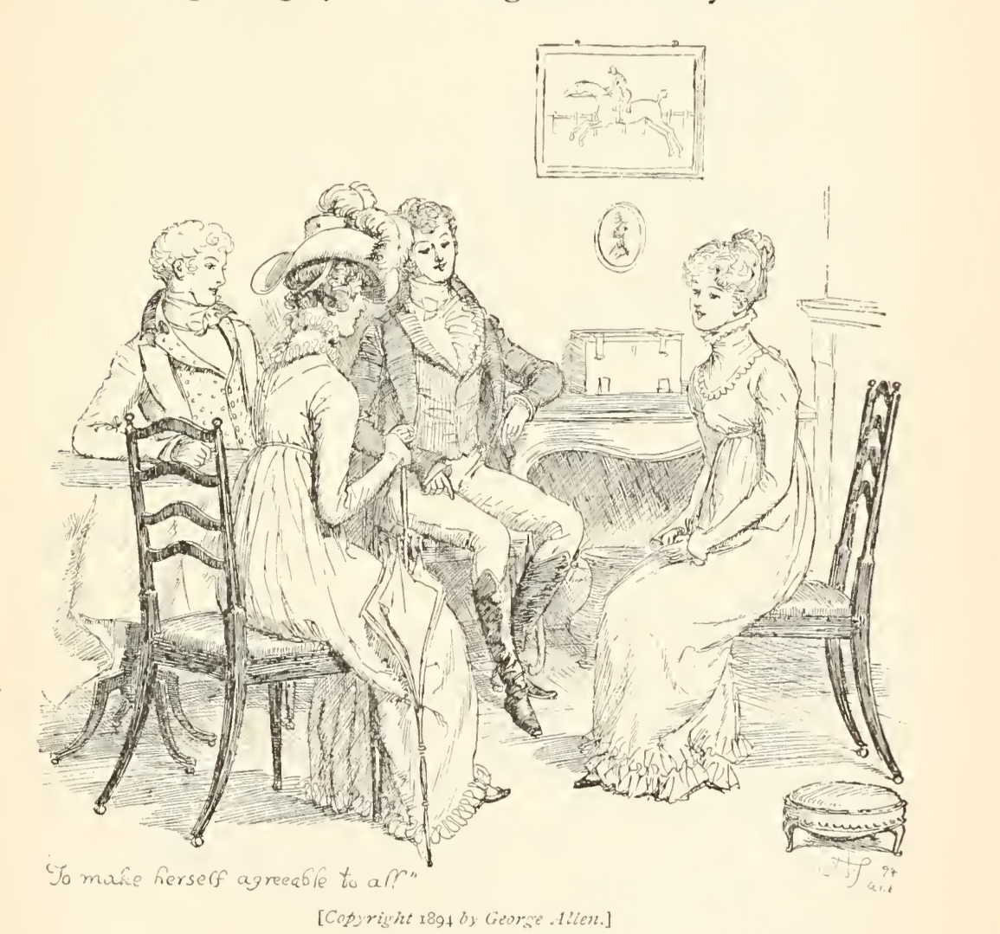

Элизабет Беннет — героиня романа Дж. Остин «Гордость и предубеждение», непохожесть которой на других сестер подчеркивается уже с первых страниц произведения. На протяжении всех трех книг Остин выстраивает эволюцию образа Элизабет как с помощью присутствия в тексте всевидящей нарраторки, так и системы точек зрения других героев и собственно героини. Согласно исследовательнице E. M. Halliday в ее работе «Narrative Perspective in Pride and Prejudice», писательница конструирует повествование так, что нам сначала кажется, что все действие будет сконцентрировано вокруг Джейн и ее отношений с мистером Бингли. В самых первых главах внимание всевидящей нарраторки, отбирающей, через призму чьего сознания она будет наблюдать за той или иной сценой, сосредоточено именно на судьбе Джейн Беннет. Постепенно нарраторка все больше и больше переключает внимание на историю Элизабет, принимая призму героини на все события, связанные с ее сестрами, буквально проникая в сознание Лиззи и описывая работу мысли изнутри: так, история превращается в нарратив о ее «sense and sensibility rather than her outward behavior» (Halliday E. M. Narrative Perspective in Pride and Prejudice // Nineteenth-Century Fiction. 1960. Vol. 15. № 1. P. 68). Отстраненная сначала нарративная инстанция, говорящая от лица truth, universally acknowledged, замечающая все поступки героев, повлиявшие на их выбор в будущем, постепенно становится выразительницей метаморфоз чувственного сознания Элизабет Беннет.
От чувств и чувствительности героини нас не отвлекает ничто — даже ее «физический» портрет. Нарраторка не дает никаких конкретных характеристик внешнему облику Элизабет, хотя в романе довольно много рассуждений и оценочных суждений героев друг о друге: насколько кто-то красив и прекрасен, чтобы быть кем-то и быть с кем-то. Однако в произведении Остин несколько раз подчеркивается взгляд Элизабет: «…лишь только он [мистер Дарси] вполне доказал себе и своим друзьям, что в ее лице нет ни одной правильной черты, как вдруг стал замечать, что оно кажется необыкновенно одухотворенным благодаря прекрасному выражению темных глаз» (Остин Дж. Указ. соч. С. 32—33). Для мистера Дарси, первоначально никак воспринявшего героиню, именно взгляд Элизабет стал, грубо говоря, «прологом» к его влюбленности в нее. Постепенно мистер Дарси увидел не только глаза Элизабет, но и ее характер. Их отношения развивались далеко не линейно: сначала Дарси не посчитал героиню достаточно красивой, чтобы он потанцевал с ней на балу, а Элизабет возненавидела его за высокомерие, лицемерие и показную любезность. Более того, к предубеждению Элизабет добавляется и лживая история мистера Уикхема, которому она очень симпатизировала в какой-то момент, о том, как семья Дарси лишила его положенного наследства. Вскоре это предубеждение рассеется, так как мистер Уикхем незаконно и без согласия родителей сбежит в Лондон с ее младшей сестрой Лидией, и мистер Дарси станет тем, кто будет хлопотать о судьбе сестры. Между этими событиями Элизабет откажет предложению мистера Дарси о замужестве, так как именно его будет считать виноватым в несостоявшемся на тот момент союзе Джейн и мистера Бингли.
В конце концов, когда исчезли гордость, тщеславие и предубеждение обоих, они признаются друг другу во взаимной любви. Эти три ключевых для нарратива элемента, формирующие кольцевую рефлексивную композицию: два из них присутствуют в заглавии книги, а третье — неоднократно обсуждается героинями и героями «Гордости и предубеждения». Элизабет, точка зрения на события которой постепенно становится ведущей, переживает все три чувства, и только от избавления от них, она может увидеть сущность мистера Дарси и полюбить его, и наоборот. Так, роман Остин можно назвать романом-воспитанием, историей преодоления Элизабет, как сформулировала исследовательница E. Zimmerman, limitation of human vision (Zimmerman E. Pride and Prejudice in Pride and Prejudice // Nineteenth-Century Fiction. 1968. Vol. 23. № 1. P. 65). Гордость и предубеждение — две стороны «ограниченного взгляда»: если гордость — это отстраненность от других, возвышение себя, то предубеждение — наоборот, полное поглощение себя мнением другого. Zimmerman делит героев на тех, кто «прозрел» от гордости, предубеждения и тщеславия, то есть Элизабет и мистер Дарси, и тех, чья точка обзора остается ограниченной — например, мистер Беннет, не понимающий и принимающий через силу решение своей дочери выйти замуж за мистера Дарси. Элизабет отказывается от своих предубеждений, воплощая свои убеждения, формирование и развитие которых мы видим на протяжении всей книги.
Внимание на взгляд Элизабет, замеченный именно Дарси, перекликается с темой limitation of human vision: ведь именно они прозревают и избавляются от пелены гордости и предубеждения: «…тщеславие, а не любовь лишили меня здравого смысла!» (Остин Дж. Указ. соч. С. 288). Тщеславие осознается самой Элизабет как существенный ее недостаток: ни один довод ее рассудка не может изгнать тщеславие из нее. Т. Смолярова в интервью для просветительского проекта Arzamas обращает внимание на множество зрительных метафор в оригинальном тексте Остин, не переданных в русском переводе. Смолярова приводит фрагмент, который подсветит мотив «прозрения», когда Элизабет увидела портрет мистера Дарси в его галерее: «…Элизабет явно испытывала к оригиналу портрета более теплые чувства, чем когда-либо на протяжении их знакомства» (Остин Дж. Указ. соч. С. 339). Так, в системе взглядов и переглядов романа и эволюции отношения Элизабет к мистеру Дарси этот эпизод кажется ключевым в истории освобождения героини от гордости и предубеждения: «портрет, изображение может изменить отношение человека к тому, с кого он был написан» (Смолярова Т. Джейн Остин. «Гордость и предубеждение». Почему Джейн Остин в своем романе так увлеклась темой зрения и оптики // Arzamas.academy. URL: Джейн Остин. «Гордость и предубеждение» • Расшифровка эпизода • Arzamas (дата обращения: 05.12.2024))

Взгляд мистера Дарси на Элизабет, сущность того, почему он выбрал именно ее, лучше выражает не он сам (по природе своей он немногословен), а героиня. На последних страницах романа, в ожидании обеих свадеб, Лиззи задает своему мужу этот вопрос, ответом на который становится «ее живой ум» (Остин Дж. Указ. соч. С. 520), что она сама называет «дерзостью» (Там же). С самого начала мистер Дарси начал уважать Элизабет за ее преданность тем, кого она любит. В эпизоде с болезнью Джейн мисс Бингли была экспрессивно возмущена поступком Элизабет, которая прошла несколько миль пешком за невозможностью взять лошадь, чтобы увидеть заболевшую сестру и ухаживать за ней. Мистер Дарси не соглашался с собеседницей, и уже после всех событий на реплику Лиззи «о настоящих моих достоинствах вы и не подозреваете» (Остин Дж. Указ. соч. С. 521), он вспомнил именно этот случай проявления сестринской доброты.
Заметим, что только в отношении Элизабет в романе используется сразу несколько форм имени, а не одно или два: Элайза, Лиззи, Элизабет. Чаще всего форму Лиззи используют родители и сестры, тетушка и дядя (миссис и мистер Гардинеры) героини, которым она приходится племянницей, то есть ее семья и ближайшие родственники. Интересно, что уже в конце романа и мистер Бингли называет Элизабет Лиззи: «Миссис Беннет, не найдется ли здесь в округе еще каких-нибудь мест для прогулок, где Лиззи снова могла бы заблудиться?» (Остин Дж. Указ. соч. С. 513), что объясняется тем, что после оглашения его свадьбы с Джейн Беннет он становится членом их семьи. Форма Лиззи используется на протяжении всего романа.
Вернемся к инстанциям точек зрения. Уже на первых страницах произведения Дж. Остин вводится дихотомичное отношение к нраву Лиззи репликами ее матери и отца. Мистер Беннет открыто выделяет Элизабет из всех дочерей, отмечая, обращаясь к оригиналу, quickness ее нрава. В переводе С. Маршака quickness звучит как словосочетание «немножко больше толку» (Остин Дж. Указ. соч. С. 8), однако мы бы предложили такой эквивалент — «порывистость». Quickness, как скоростной, понятливый, сообразительный, даже страстный, говоря о применении к характеру Лиззи, — именно эту черту, что ее отличает, можно называть порывом. Отец Элизабет и в конце книги, когда его дочь сообщает о своей скорой свадьбе с мистером Дарси, переживает за то, чем обернется для героини этот брак с ее «порывистым» характером: «Твои остроумие и жизнерадостность грозят тебе, в случае неравного брака, многими бедами» (Остин Дж. Указ. соч. С. 516). В конце концов отец смиряется с браком дочери.
Отношение матери к Элизабет полностью противоположно мнению отца, она, наоборот, никак не выделяет Лиззи из всех дочерей, более того — «Миссис Беннет любила Элизабет меньше других своих дочерей» (Остин Дж. Указ. соч. С. 145): «Лиззи ничуть не лучше <…> Я уверена, что она и вполовину не так красива, как Джейн и гораздо менее добродушна, чем Лидия» (Остин Дж. Указ. соч. С. 7). При практически каждом их взаимодействии миссис Беннет делает бесконечные замечания Элизабет, касательно ее острословия и невписанности ее нрава в приличия светского общества: «…не позволяй себе болтать всякие глупости, которые ты так часто произносишь у себя дома» (Остин Дж. Указ. соч. С. 59), «…экая упрямая и своенравная, неблагодарная девчонка» (Остин Дж. Указ. соч. С. 154). Для миссис Беннет ключевая задача — выгодно выдать замуж дочерей, поэтому, когда и без того нелюбимая Элизабет отказывает мистеру Коллинзу, повторяется та же дихотомичная словесная характеристика Лиззи, что и в начале: мистер Беннет полностью стоит на стороне Элизабет, соглашаясь с ее отказом выходить замуж за мистера Коллинза. Миссис Беннет же «не захочет видеть» (Там же) «настоящую виновницу всех бед» (Остин Дж. Указ. соч. С. 178) в случае отказа. Именно поэтому ее отношение к Лиззи резко меняется, когда она узнает о ее отношениях с мистером Дарси, одном из самых обеспеченных женихов в округе: «Лиззи, душенька моя! Какая ты будешь богатая и знатная! Сколько у тебя будет денег на мелкие расходы! Сколько драгоценностей, карет! Джейн даже и сравниться с тобой не сможет. Я в таком восторге, так счастлива!» (Остин Дж. Указ. соч. С. 518). Элизабет, становясь замужней женщиной, с одной стороны, вписывается в идеальный сценарий жизни дочери миссис Беннет, а с другой стороны, из-за того, что мать все время сравнивает дочерей, выбирая критерием красоту, приличие и выгодность замужества, Элизабет из разряда самой нелюбимой переходит в разряд самой любимой, только благодаря грядущей обеспеченной жизни с мистером Дарси.
Если мать Элизабет ценит в ней, по сути, состояние ее будущего мужа, то старшая сестра Лиззи — Джейн солидарна в отношении к Элизабет с мистером Беннетом. Сестры становятся самыми верными подругами, взаимно открывающие душу друг другу. Согласно работе S. M. Eddleman «“Not half so handsome as Jane”: Sisters, Brothers, and Beauty in the Novels of Jane Austen», в системе сестринских отношений в романе Остин существует две пары Элизабет—Джейн и Лидия—Китти,и Мэри, которая не вписывается ни в одну пару. Исследовательница проводит параллель между отношениями Джейн и Элизабет и образом друга-ангела-хранителя (Eddleman S. M. «Not half so handsome as Jane»: Sisters, Brothers, and Beauty in the Novels of Jane Austen // Persuasions: The Jane Austen Journal Online. 2009. Vol. 30. № 1. URL: Stephanie M. Eddleman (дата обращения: 09.12.2024)), популярным в литературе XVIII века: с одной стороны, он предупреждает об ошибках чувства и разума (все ночные разговоры сестер о мистере Бингли, Дарси, об их чувствах), а с другой — заботится об обеспечении счастливой жизни: «Ах, Лиззи, почему в нашей семье только мне одной выпало это блаженство? Как бы мне хотелось увидеть тебя столь же счастливой!» (Остин Дж. Указ. соч. С. 478)
Миссис Гардинер — тетушка Элизабет, помогающая ей и ее сестрам безвозмездно, готовая выслушать свою племянницу и дать материнский совет в отношении чувств, которого не может дать миссис Беннет. Миссис Гардинер видит в Элизабет рассудительную женщину, quickness которой служит ей не во вред, а во благо: «У тебя есть здравый смысл и все мы уверены, что ты сумеешь руководствоваться им в своих поступках» (Остин Дж. Указ. соч. С. 199) При встрече с мистером Дарси именно миссис Гардинер была той, кто разглядела в нем не заносчивого сноба, а приятного доброго человека: «Его взгляды и здравый смысл кажутся мне безукоризненными. Если ему чего-то и недостает, так это некоторой живости характера, которую в нем могла бы воспитать спутница жизни при условии, что он сделает удачный выбор» (Остин Дж. Указ. соч. С. 443), и именно тетушка в своем письме рассказала всю правду о благородном поступке мистера Дарси в ситуации с бегством Лидии — письмо миссис Гардинер послужило еще одним ключиком к «прозрению» Элизабет.
Еще одну форму имени Элизабет — Элайза — используют в основном Шарлот Лукас, ее близкая подруга; отец Шарлот — сэр Уильям Лукас; его младшая дочь — Мэрайя; мисс Бингли, «подруга» Джейн («…ревность и неприязнь, вызванные в ней одной из сестер, были гораздо сильнее ее привязанности ко второй» (Остин Дж. Указ. соч. С. 81)), недолюбливающая Элизабет («Как плохо выглядела сегодня Элайза Беннет, — не правда ли, мистер Дарси?— воскликнула Кэролайн», Остин Дж. Указ. соч. С. 366.) Частое взаимодействие Элизабет с семьей Лукас ограничивается первой книгой: до того момента, когда Шарлот и мистер Коллинз, до этого получивший отказ Элизабет на его предложение, объявили о помолвке. Эмоциональное и рефлексивное переживание этого события Элизабет, выраженное голосом всевидящей нарраторки, сводит взаимоотношения между подругами на нет: «И боль, вызванная тем, что Шарлот унизила себя подобным образом, так сильно упав в ее [Элизабет] мнении, усугублялась мрачной уверенностью в ее печальной судьбе» (Остин Дж. Указ. соч. С. 176), а «будущие обещанные поездки» (Остин Дж. Указ. соч. С. 202) и новые встречи не приносили Элизабет никакой радости, хотя до этого более близкой для Элизабет была только ее старшая сестра Джейн. Тем не менее различие двух подруг в их видении брака, прозвучавшее особенно отчетливо после двойного предложения мистера Коллинза («Ты знаешь, насколько я [Шарлот] далека от романтики. Мне она всегда была чужда. Я ищу крова над головой» (Остин Дж. Указ. соч. С. 175)), «натянуло» их отношения.
Взаимодействие мисс Бингли и Элизабет не претерпевает изменений и остается однозначно напряженным прежде всего из-за ревности со стороны Кэролайн Бингли: то, что так привлекло мистера Дарси в Элизабет («…она [Кэролайн] могла бы сообразить, что высказывания подобного рода едва ли откроют для нее кратчайший путь к его сердцу» (Остин Дж. Указ. соч. С. 366)), вызывает у нее только эмоции негодования, в некоторой степени — отвращения. «Ее [Элизабет] манеры были признаны вызывающими и самонадеянными, и было сказано, что она полностью лишена вкуса, красоты, изящества и умения поддерживать беседу», «Никогда не забуду, в каком виде она появилась сегодня — как будто какая-то дикарка», «[Элизабет прошла пешком несколько миль] худший вид сумасбродства — столь свойственное провинциалам пренебрежение всеми приличиями» (Остин Дж. Указ. соч. С. 48—50) — несколько эпитетов, выражающих очевидно отталкивающее впечатление, которое произвела Элизабет на воспитанных в самой искусной светскости мисс Бингли и ее сестры мисс Херст.
Другая инстанция постулата исключительной светскости — тетушка мистера Дарси — леди Кэтрин де Бер. Они с Элизабет встречаются несколько раз, и каждый раз леди де Бер абсолютно открыто, доходя до неприличия, критикует воспитание семьи Беннет, гадает над возрастом сестер и не ожидает от Элизабет непрямых дерзких ответов на ее вопросы: «Леди Кэтрин, казалось, совершенно опешила оттого, что не получила прямого ответа, и Элизабет заподозрила, что ей суждено было оказаться первым человеком, осмелившимся дать отпор бесцеремонности столь важной особы» (Остин Дж. Указ. соч. С. 230). Ровно перед объяснением мистера Дарси и Элизабет, леди де Бер приезжает «испытать» героиню, чтобы проверить, что между ней и Дарси ничего нет и не планируется, ведь дочь де Бер уже с младенчества обручена с ним. Элизабет открыто говорит о своей ненависти к браку, заключенному до рождения будущих супругов («Мне неизвестно, в какой мере ваш племянник одобряет ваше вмешательство в его дела. Но у вас, во всяком случае, нет никакого права вмешиваться в мои <…> Вы оскорбили меня всеми возможными способами» (Остин Дж. Указ. соч. С. 488)), — и в итоге вывод леди Кэтрин о нраве Элизабет таков: «…поперек дороги встала женщина низкого происхождения, без положения в свете и ничем не связанная с нашим семейством!» (Остин Дж. Указ. соч. С. 484)

Рассмотрев точки зрения на образ Элизабет Беннет, перейдем к ее автокомментариям о самой себе. Примечательная черта героини — ее абсолютная естественность, то есть отсутствие светской напыщенности, лицемерия и показной приятности. Элизабет говорит людям вокруг нее именно то, что она о них думает — она не боится саму себя и свою «нетаковость» воспринимает как инструмент бунта против традиционных салонных жеманств («…при попытке меня устрашить я, напротив, становлюсь еще более дерзкой» (Остин Дж. Указ. соч. С. 240)); в финальном разговоре с мистером Дарси она открыто это подтверждает: «Я привлекла к себе ваше внимание и интерес именно тем, что оказалась вовсе на них не похожей» (Остин Дж. Указ. соч. С. 521). Выражая свои взгляды со всей прямотой, она выступает против карикатурных и шаблонных представлений об «идеальной» образованной женщине: «… вы, вероятно, сможете дать точное определение понятия «образованная женщина»? <…> Я никогда не видела, чтобы в одном человеке сочетались все те способности, манеры и вкус, которые вами были сейчас перечислены» (Остин Дж. Указ. соч. С. 54—55).
Наблюдательная, аналитическая, но не лишенная экспрессивной чувственности и чувствительности рефлексия Элизабет Беннет завоевывает внимание всевидящей нарраторки, показывающей детально каждую ступень эволюции характера героини. Элизабет не лишена чувства уместной и колкой шутки: «Мне кажется, я никогда не высмеивала мудрость и благородство. Глупость и причуды, капризы и непоследовательность кажутся мне смешными, и я смеюсь над ними, когда мне это удается» (Остин Дж. Указ. соч. С. 78). Периодически Элизабет «отшучивается» от серьезных ответов перед другими, но никогда — перед собой. Шутка становится защитной крепостью, внутри которой происходит непрерывное размышление как о своих чувствах и положении, так и о происшествиях, связанных с ее сестрами: Джейн, Лидией.
Ни одно событие, происходящее в окружении Элизабет, не проходит для нее бесследно: будто то слух о мистере Дарси, помолвка ее лучшей подруги Шарлот Лукас, или перипетии в чувстве Джейн к мистеру Бингли — перед читателем все это проходит сквозь линзу героини: «И еще меньше таких [людей], которых я по-настоящему уважаю. Чем больше я наблюдаю мир, тем меньше он мне нравится. Каждый день подтверждает мне несовершенство человеческой натуры и невозможность полагаться на кажущиеся порядочность и здравый смысл» (Остин Дж. Указ. соч. С. 187). Осознание ответственности за своих сестер, за их судьбу и поступки перед лицом их будущей репутации, напрямую зависящей от действий каждой: с одной стороны, Лиззи бунтует против принятых светских напускных приличий, а с другой стороны, понимает, что общество строится именно на них, и этот кодекс светскости никуда не исчезнет в ближайшее время: «А ведь я знала, что он [мистер Уикхем] за человек! О, если бы я поняла раньше, что мне следовало, нет, что я была обязана предпринять! Но мне это было невдомек. Я боялась зайти слишком далеко. Какая страшная, непоправимая ошибка!» (Остин Дж. Указ. соч. С. 376). В случае мистера Уикхема и его подлого характера и соответствующих действий, Элизабет, узнавшая об этом, но никому не рассказавшая, берет ответственность за судьбу Лидии, сбежавшей с Уикхемом в Лондон, на себя.
Естественность Элизабет заметна и в перемене, произошедшей с ней, когда она уехала от суеты в Озерный край. Именно в горных пейзажах она находит утешение: сами горы, их скалы и перепады, похожи на ее остроконечный характер. «Прощайте, разочарование и сплин! Что значат люди по сравнению с холмами и скалами?» (Остин Дж. Указ. соч. С. 214) — показательный природный крик практически романтической героини.
Отношение Элизабет Беннет к браку формируется вопреки тем отношениям, которые выстроили между собой ее родители, между которыми нет никакой духовной связи — а именно ее ищет героиня в будущем муже, и находит ее в мистере Дарси. Чувство благодарности — центральное в ее отношении к Дарси, и тем ценнее становится эта благодарность, что она не была образцово-показательной — для Элизабет искренняя добродетель совершается не на глазах у восхищенных сочувствующих зрителей, а тихо, незаметно, даже в какой-то степени секретно.
Подводя итоги, Джейн Остин в романе «Гордость и предубеждение» использует сразу несколько приемов для создания расстановки полярных мнений об Элизабет Беннет. Во-первых, усиленное нарратологическое внимание чувственным метаморфозам героини и концентрация нарраторки на представлении нам событий романа через призму говорящих и проговариваемых убеждений Элизабет. Во-вторых, создание такой героини, которая не вписывается в рамки светских условностей, что в реалиях начала XIX века обязано было вызвать общественный резонанс и рождение противоположных мнений на характер ее натуры. В-третьих, выборка такого окружения Элизабет, конфликтующего с ее воззрениями: благодаря ему она либо убеждается еще больше в своей правоте, либо сущностно эволюционирует — именно так Дж. Остин раскрывает всю «нетаковость» своей героини: Лиззи, Элайзы, Элизабет Беннет.
Библиография:
Halliday E. M. Narrative Perspective in Pride and Prejudice // Nineteenth-Century Fiction. 1960. Vol. 15. № 1. Pp. 65—71.
Zimmerman E. Pride and Prejudice in Pride and Prejudice // Nineteenth-Century Fiction. 1968. Vol. 23. № 1. Pp. 64—73.
Eddleman S. M. «Not half so handsome as Jane»: Sisters, Brothers, and Beauty in the Novels of Jane Austen // Persuasions: The Jane Austen Journal Online. 2009. Vol. 30. № 1. URL: Stephanie M. Eddleman (дата обращения: 09.12.2024).
Остин Дж. Гордость и предубеждение / Подг. изд. Н. М. Демурова, И. С. Маршак, Б. Б. Томашевский; отв. ред. М. П. Алексеев; пер. с англ. И. С. Маршака // Литературные памятники. М.: Издательство «Наука», 1967.
Смолярова Т. Джейн Остин. «Гордость и предубеждение». Почему Джейн Остин в своем романе так увлеклась темой зрения и оптики // Arzamas.academy. URL: Джейн Остин. «Гордость и предубеждение» • Расшифровка эпизода • Arzamas (дата обращения: 05.12.2024).